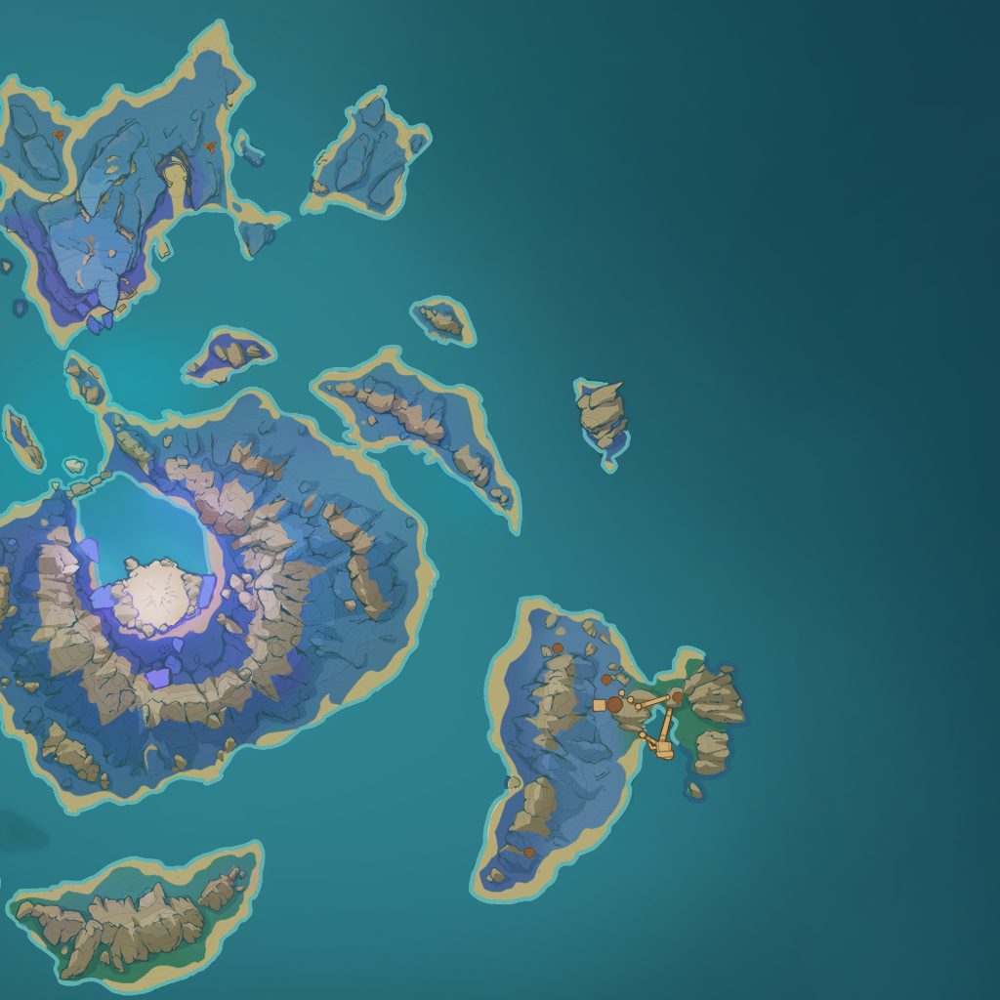
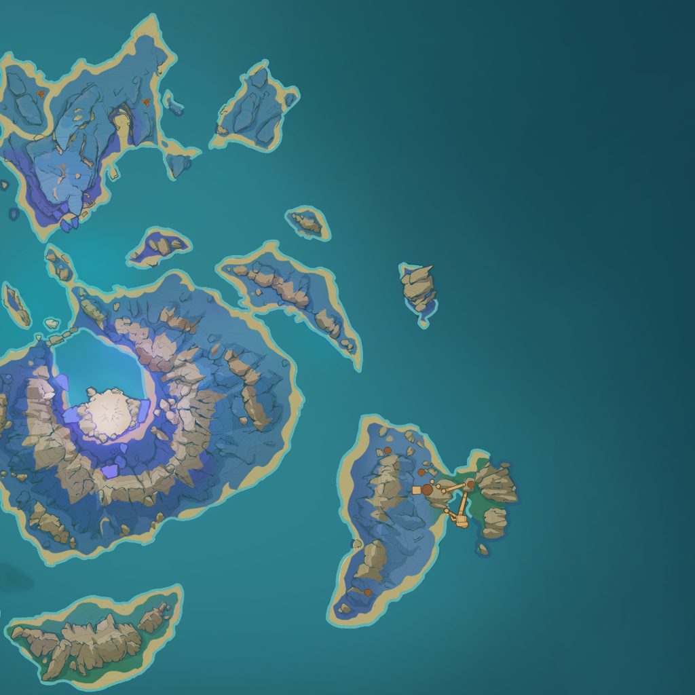
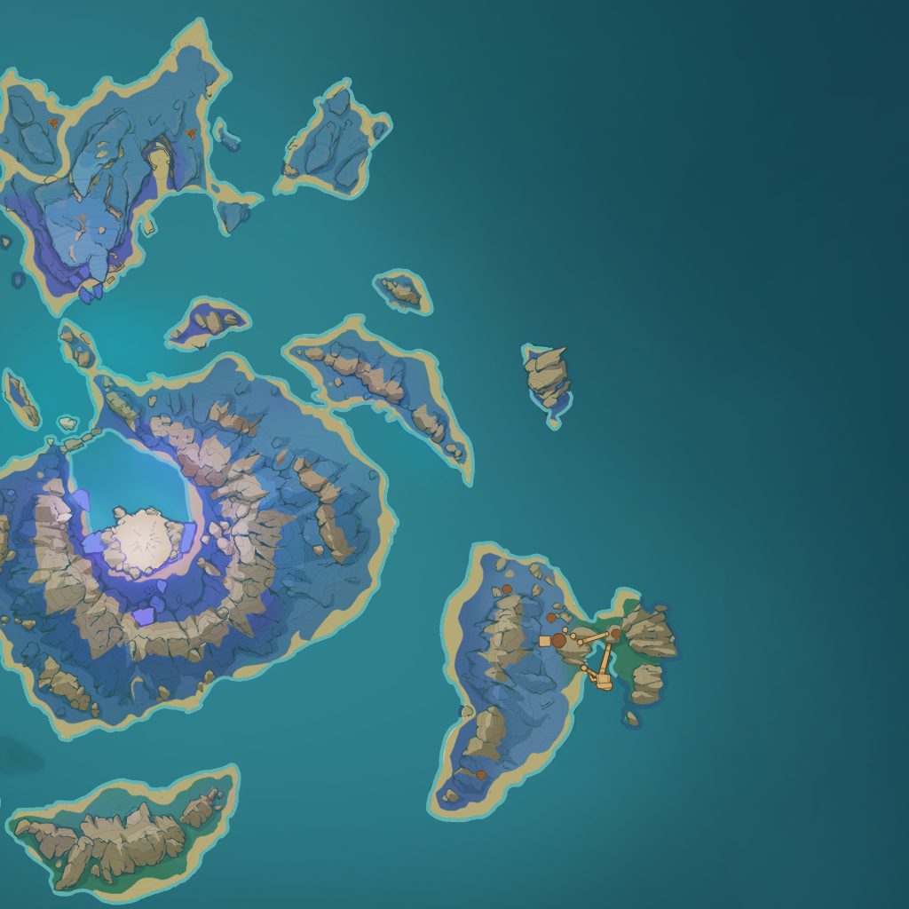
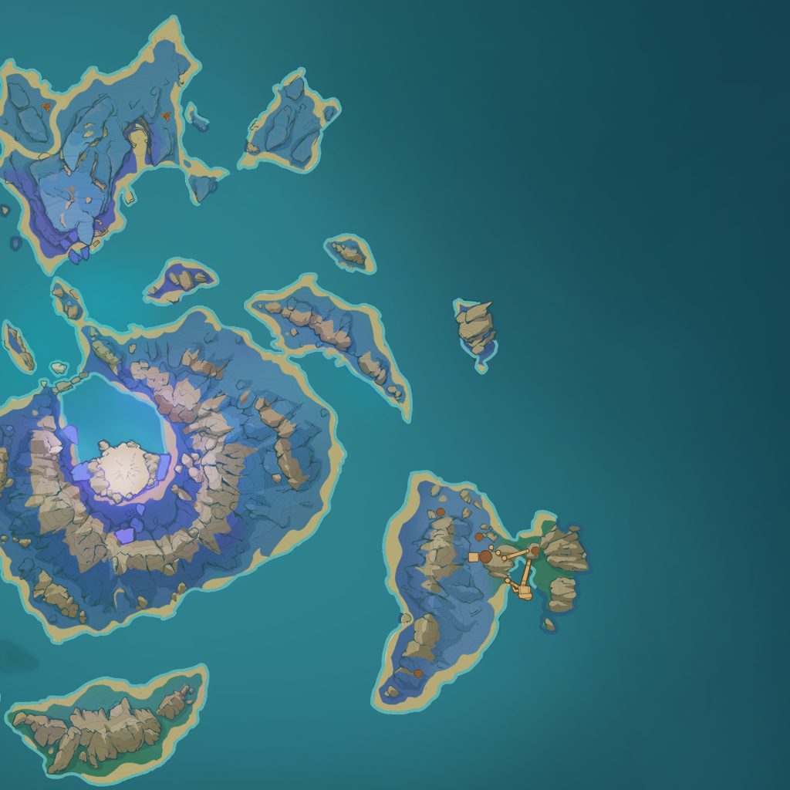

 

"Guaranteed" Spawn
If you find a missing spot, swap the locations of your EXP and mora leylines. If you already did this, Hajime will mark 4 spots on the island with all spawns and 2 spawns will be on the island with your original mora leyline.